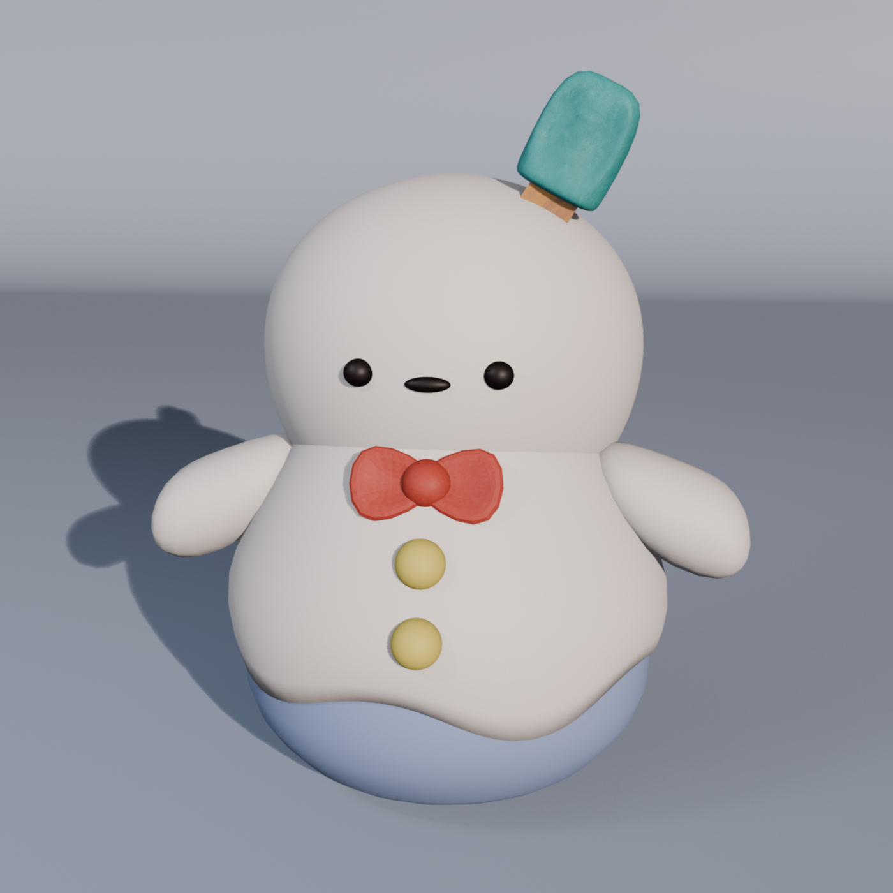
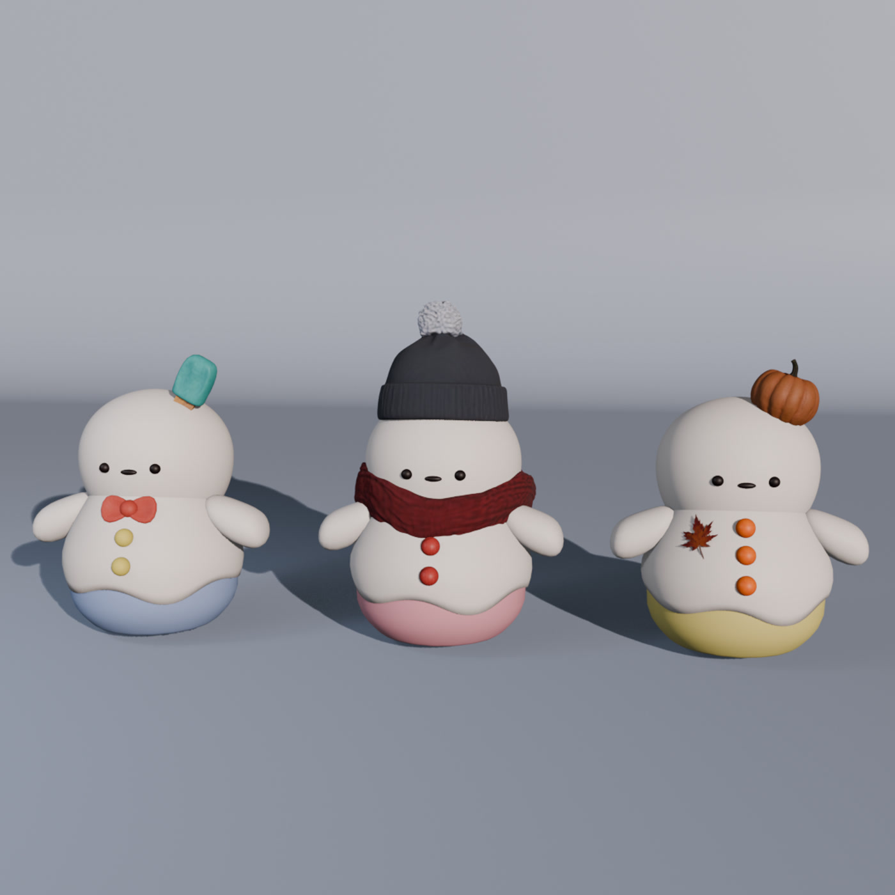
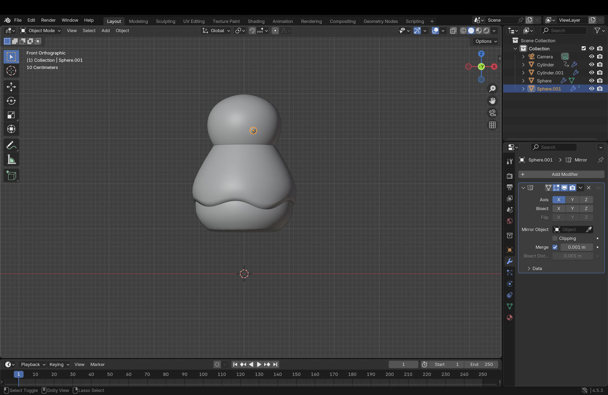
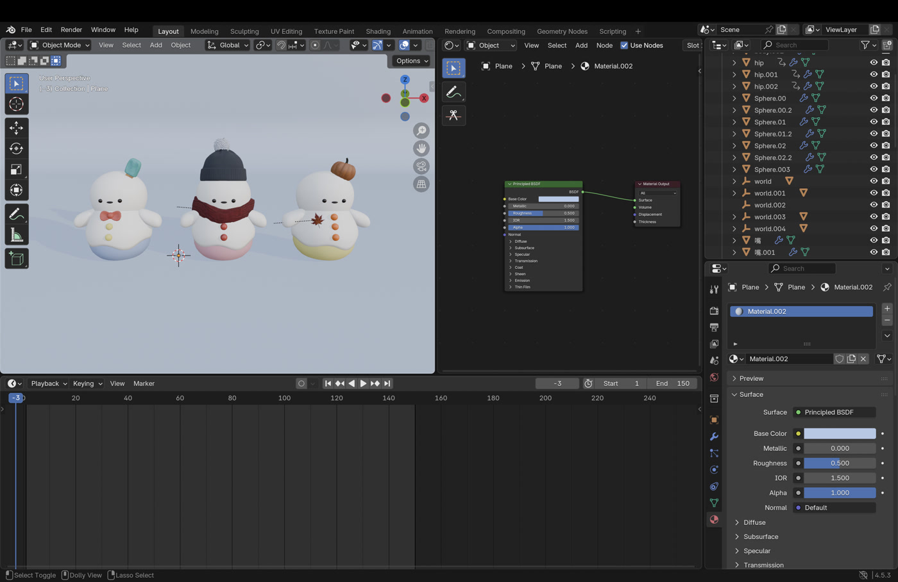

Mochi
Ice Pop Vendor
Bring coolness to the hottest days.
Cheerful · Energetic
A snow folk who loves sunshine. Mochi sells sweet popsicles made from mint soda.
Explore the three Snowy outfits, then mix the details to make your own.

Loading Snowy… / 正在加载
Drag to turn · Scroll or pinch to zoom · Arrow keys to rotate

Select a snow folk to hear their story.
A look inside the Blender workspace: the base form, followed by the three characters brought together with their colors and materials.

A round head, a soft body, and an uneven snow-like edge.

Comparing the accessories and colors across the character family.
A short animation test recorded in the Blender viewport, showing the summer character in motion.